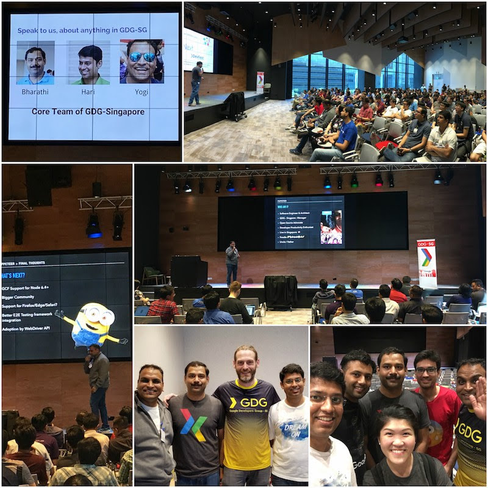
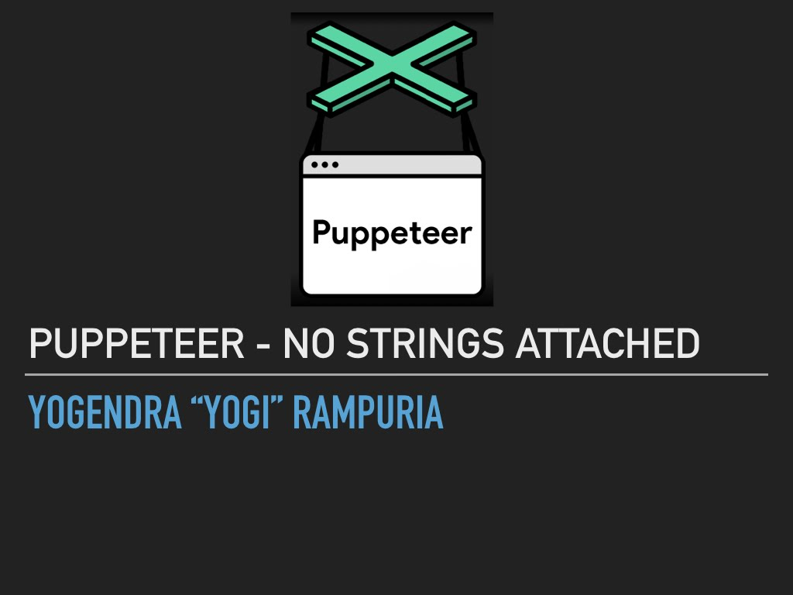
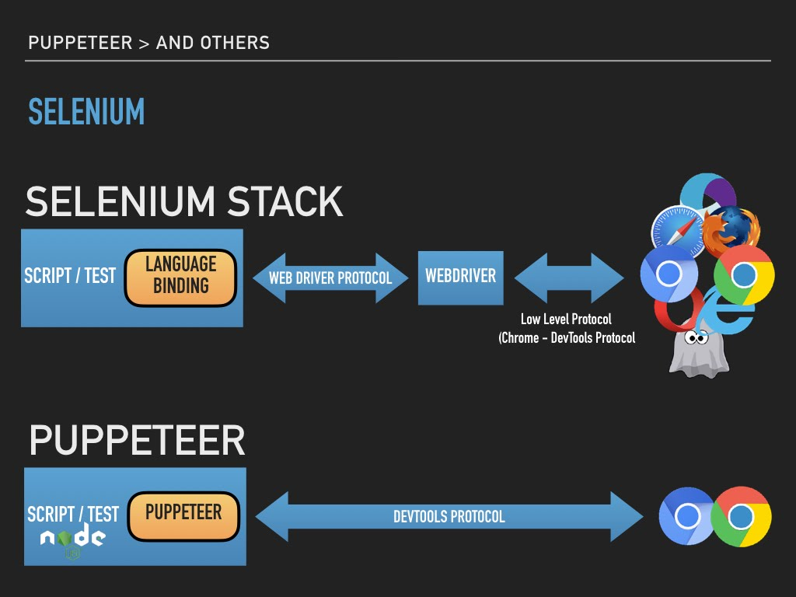
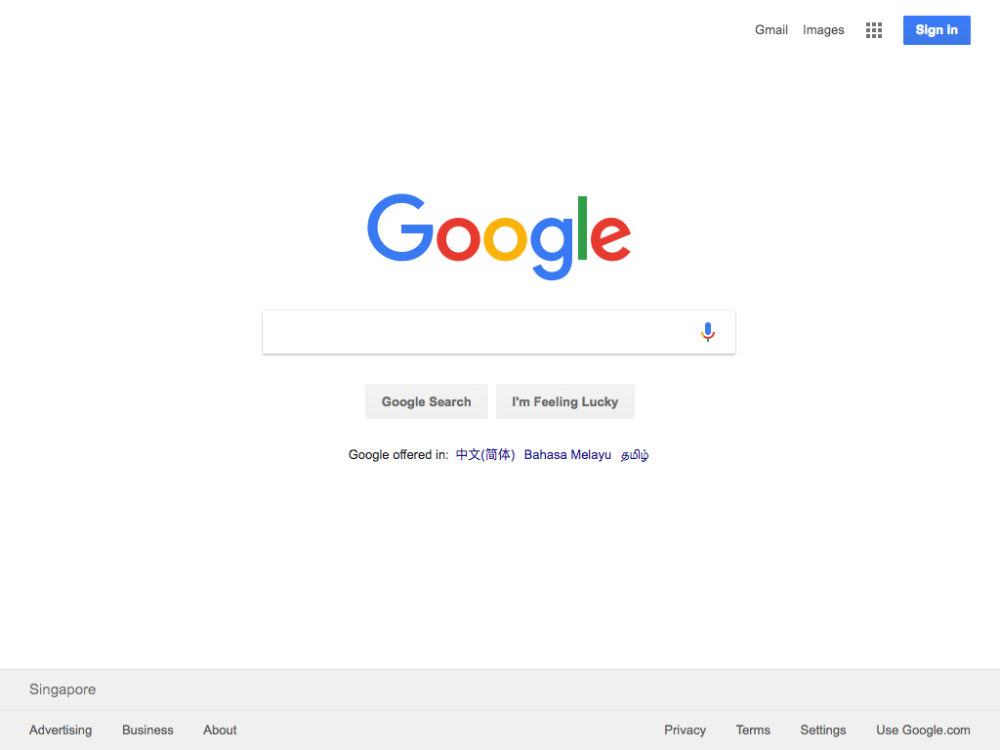
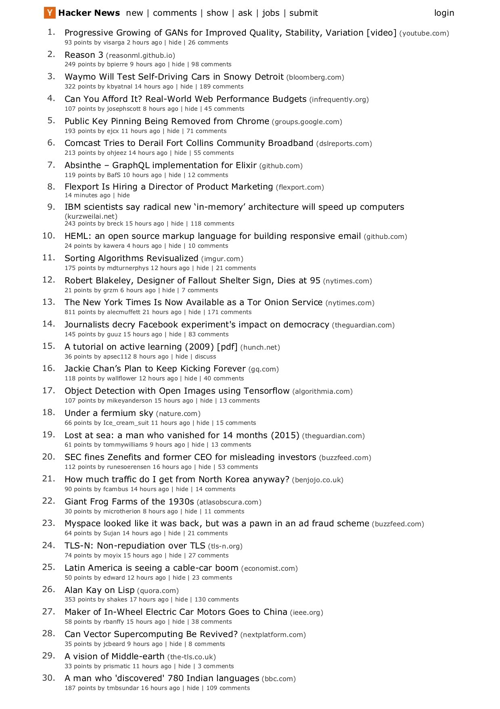
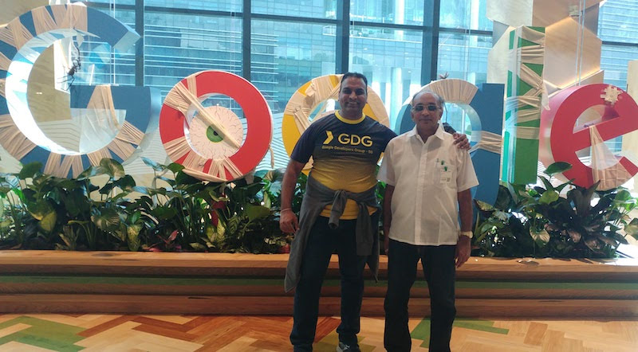

Puppeteer - No Strings Attached
I am a Co-Manager for Google Developer Group - Singapore (FB). And today was our annual GDG-SG DevFest 2017 event. Apart from being an organizer, I was also a speaker. I gave a short talk on Puppeteer. This post is (almost) a transcript of my speech today. Slides can be found here


Overview
Puppeteer is a Node JS API published by Chrome team. It is an API to control Chrome browser via DevTools Protocol. Puppeteer was released shortly after the Chrome 59. This version of Chrome brought us Headless Chrome. It requires Node JS version 6.4+. I would recommend using version 7.5+, so you can use async/await feature from ES2017.
Features
It connects with browser using Chrome DevTools Protocol. Hence, it works with Chrome/Chromium only, and not with other browsers.
Puppeteer can work in headless environment. This makes it a good candidate tool for unit/acceptance/functional tests in a CI environment. It can simulate keyboard, mouse and touch events. So, if you are building a responsive application for desktop and mobile devices, you can use Puppeteer for testing. It also brings the PDF and screenshot capabilities out of box. You can capture PDF and screenshot for whole or part of the page.
Puppeteer allows you to trap console output and web requests. If you have a requirement to “flag” any console output, you may put traps in your test cases for it. If you want to mock a back-end server request (json/xml), you can intercept those request and provide mock response for it.
It has API for performance tracing. So you can use it for recording page load performance and trace any bottlenecks. One of the biggest advantage, of having latest Chromium or Chrome being driven by the API, is Blink Engine. It is a shiny new layout engine from Chromium project and replaces WebKit engine. I am not aware about any short comings with WebKit, but I am guessing that Chromium has outgrown WebKit zone.
Use cases
I have found Puppeteer most useful in browser automation. I have done multiple personal projects for browser automation (I am a lazy guy). Puppeteer offers a simple clean API interface for this, and that in itself is a great selling point. You can use if for frontend testing, e2e testing, etc.
Server side rendering (SSR) is another great use case for this API. You can easily render your single page applications’ view on server side and send them to client. This is very useful when you have deep nested view and deep-linking facility in your application.
If you have written apps in Spring Web MVC to produce PDF, you would be aware of maintenance nightmares. You had to maintain each View (HTML and PDF) separately. I eventually started using PhantomJS on server side and reused HTML view to generate PDF with it. You get absolutely great looking PDF out of box with Puppeteer. Its identical to what you get in the PDF print in regular Chrome.
Web crawling and scraping is one of the easiest things to do with Puppeteer. You can easily navigate to pages, retrieve details and process them in a nested fashion.
Puppeteer And Others
Browser automation and e2e testing is a very busy area. Lots of options for frameworks, APIs, Tools and Platforms. As a result, there are many competing tools in this space. Puppeteer emerges as a good replacement for a few of them.
PhantomJS
PhantomJS was one of the first tools that I used for headless browsing. I used it for generating server side PDF. However, recent events force us to move on to other tooling. Primary maintainer of PhantomJS, Vitaly, has stepped down. In his departing note, he expressed excitement about the new Headless Chrome experience. That’s fair! And I agree with his point of view.
The ‘Selenium’ Empire
Selenium is probably the most used browser automation and testing tool for frontend. It is the “Automation Emperor” for me. It has the most comprehensive coverage in terms of languages and target browsers. It has language binding for Java, Node, Ruby, Python, etc. You name it and it has language binding for it. And on the other side, it has web driver for every browser or browser like system. It has drivers for all browsers, Chrome, Safari, Firefox, Opera, etc. It also has drivers for like ok PhantomJS and Appium.
They have managed to achieve the most unimaginable feat. They have got these giants on a common footing. It enjoy a lot of love and support from community, including myself. So, why am I even talking about puppeteer.
That brings me nicely into the next piece. Architecture-wise Selenium and Puppeteer are slightly different. Selenium achieve browser automation though an intermediate proxy, the WebDriver. WebDriver is a per-browser component implementing remote control capabilities. It exposes an restful API interface. A language binding uses these APIs to interact and control browser.

Puppeteer takes a leaner approach to this and taps straight into the DevTools protocol of the browser. This makes it possible to easily keep keep with browser features and automation API, in sync.
Demo
Lets go through some samples to understand the development with Puppeteer.
Installation
Puppeteer is a Node JS API. Its published as an NPM package. You can install it in you project with simple npm install
1 | npm i --save-dev puppeteer |
Notice how it has also downloaded Chromium. This ensures that it has a compatible version of chromium always. You can skip Chromium download and run it with your own installation of Chrome / Chromium. You can skip download by setting an PUPPETEER_SKIP_CHROMIUM_DOWNLOAD environment variable. And you can provide executable path to alternate Chrome or Chromium in you code.
Screenshot
Taking a screenshot in an automation tool is like a “Hello World!” thing.
1 | ; |
If you are not familiar with async/await, I would recommend reading this. Most methods in Puppeteer API return a Promise. await ensures that you wait for a promise to resolve or reject before proceeding to next instruction. Line 5, invokes launch(), which launches Chromium. You can specify launch options as an object parameter, like puppeteer.launch({headless: false}). See all the options in documentation page. Line 6 creates a new tab with newPage() method. goto() method on line 7 navigates page to a URL. waitUntil ensures that page and its and related assets (js/images/css) are loaded, before promise is resolved.
On line 10-12, screenshot() method captures an image of output and stores it in screenshot.png. This looks plain and simple. And that is what made me like this API. It is clean and simple.
You can run this with following command
1 | node screenshot.js |
This produces screenshot.png in the current directory.

This is the single biggest reason for me to use Puppeteer. PDF generation is a breeze! Heres how you can do it.
1 | ; |
We will now generate PDF from hacker news landing page. Code is not very different from what we saw in screenshot example. Line 20-23 generates PDF instead of screenshot. And thats it. You can specify paper size for the PDF in the optional argument. Look at documentation for more options. Its output would be identical to “Print PDF” function of Chrome or Chromium. It uses print media css.

Link to actual extracted PDF
Web Scraping
I have used Puppeteer most for this. In my work environment I have need for integration via web pages. There are case where I don’t have access to a data API for integration. Puppeteer can make it possible for you to expose a “web” site as a JSON api.
1 | `use strict`; |
We first goto “books.toscrape.com” and click on first image (line 11) on the page. First image on page is referred via SELECTOR_BOOK_IMAGE css selector. This triggers a navigation to a details page.
On line 13, a function is dispatched for evaluation on the DOM. This function goes through DOM element (h1 and element with class price_color ) and extracts text (innerText).
You can simply run this with node command.
1 | node scrape.js |
You will see browser window for this example. This is because of line 7, where I have opted for {headless: false}. This is to show scraping in action.
Disclaimer: Be very careful what you scrape. You can/will run into legal and licensing issues very quickly.
Final Thoughts
Puppeteer is a very promising project. In a very short period (< 6 month) it has gotten great support from community. I have read many posts covering this API. I am confident about the future of this project. I am looking forward to a growing and thriving community for this.
It is a very good replacement for PhantomJS. However, my key concern as at the moment are:
- Google Cloud Function (GCF) does not support Node JS 6.4+. So, you have to use cloud VM or Container service to run this in cloud. Hopefully next version of LTS will be 8+, and will bring all the goodness of async/await into the mix
- Lack of support for non-Chrome based browser could be discouraging for many developers. We all want to keep tool/library dependency low and single codebase for testing. If you project demands multi-browser testing, you will end up in a fractured state. Better stick with WebDriver/Selenium. May be WebDriver will adopt some part of Puppeteer API.
I also found the e2e testing support very unclean. Its possible, workable, but now readable. I would like to see a very clean integration with likes of cucumber, mocha, chai, etc.
Links
Here are some links that I used for preparing my presentation.
- Puppeteer Home
- Try Puppeteer in Browser
- Puppetron (Demo)
- Getting Started with Headless Chrome - Eric Bidelman
- Getting Started with Puppeteer and Headless Chrome Web Scraping - Emad Ehsan
- A Guide to Automating and Scraping - Brandon Morelli
Questions
Can I use Puppeteer for extracting data and localizing?
Technically, Yes. You can setup data pipeline to crawl and extract data. You case store it in database or some other persistent store. You can use a workflow to review, edit and publish. Be very careful about licensing. Don’t crawl/scrape data without author’s consent.
Can you run multiple tabs simultaneously?
Yes. You can use newPage() method to create multiple tabs. And for each tab you can have a different execution code. I have tried it with 2 tabs. Here is a code sample for the last example (scraping) that does same thing but five times, concurrently.
1 | const SELECTOR_BOOK_IMAGE = |
Can I extract CSS from the pages with this?
I have not tried it, but as you can evaluate any valid javascript code using API, you should be able to extract that.
Below is a code that dumps each css being accessed by the page.
1 | const puppeteer = require("puppeteer"); |
Thanks
My father (Shri. Noratan Rampuria) has always been very supportive of my life and career choices. And he showed his support once again. He was there for my talk and had looked happy. Thanks papa 🙏!

Many ex and current colleagues were also at the event and showed their support. Thanks folks🤝!
Thanks to Bharathi and Hari (GDG Mangement team) for the opportunity to speak. Well, it was more like push to speak 😀. Manikantan K, Hui Yi, Dirk Primbs and David from Google Developer Relations for supporting GDG-SG - “Thank you”. And Jason Zaman for incepting the idea “Want to be at a conference? Just speak on something”.